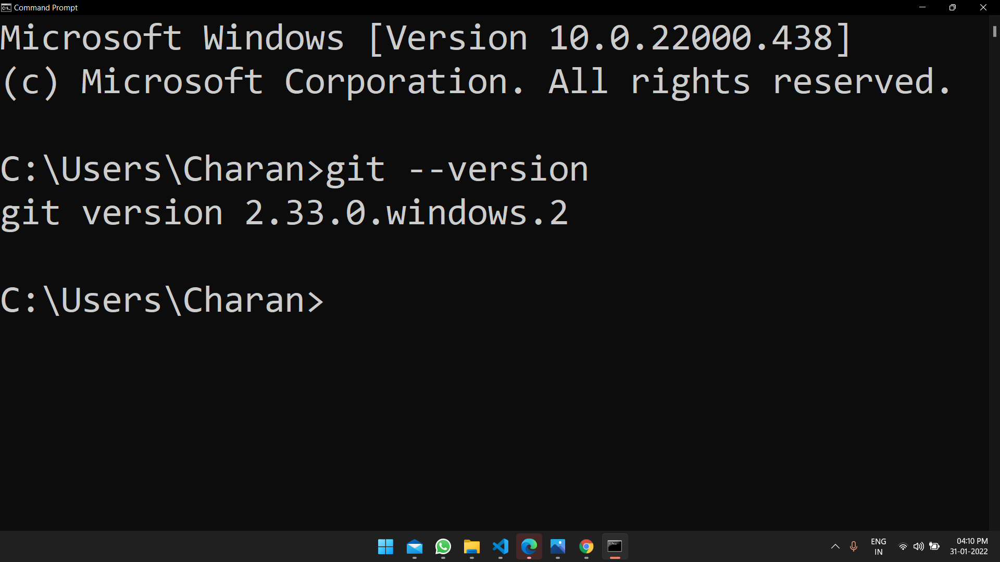

1. Browse to the official Git website: https://git-scm.com/downloads
2. Click the download link for Windows and allow the download to complete.
3. Browse to the download location (or use the download shortcut in your browser). Double-click the file to extract and launch the installer.

4. Allow the app to make changes to your device by clicking Yes on the User Account Control dialog that opens. And click on goining Next until you get Install. And now click on install.

5. Open command promt and type the below command
git --version
6. You should see the version of git installed
7. Open VS code

8. Click Terminal --> New Terminal --> Change Powershell to Command Promt execute below commands
git config --global user.email "email_address"
git config --global user.name "github_username"
9. Create empty folder and open it on vs code and crate a sample html file.
10. Click on "Source control button" and click on "initialize repository"

11. Stage changes by clicking "+" symbol

12. Click on right symbol and type the first commit message
13. A broser window promts and click continue and authorize the github

14. Click on "Publish Branch"
15. Follow Step 11 and Step 12.
16. Click on "Sync Changess"